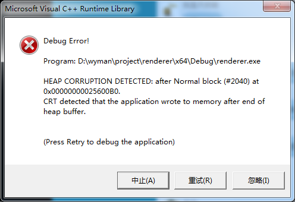

Visual Studio的
lib include目录，继承的值丢失
在C:\Users\%{用户名}\AppData\Local\Microsoft\MSBuild\v4.0里面有2个文件要检查一下:
Microsoft.Cpp.x64.user.props
Microsoft.Cpp.Win32.user.props
32位和64位的全局项目配置，里面的
glew和glfw的动态链接/静态链接问题
除了要在链接选项设置好lib文件名之外，还要在代码里面加以下代码，控制动态/静态链接：
define GLEW_STATIC
define GLFW_DLL
否则会编译报错。
SDL_main链接错误
mian函数必须带参数：
int main(int argc, char *argv[])
如果只写int main() 就会链接报错。
Heap Corruption Deteched

这个报错发生在main函数返回时。出错原因是在堆数组的赋值上。
先是初始化一个数组指针：
bool * array = new bool[100];
然后循环赋值：
for(int i = 0; i <= 100; i++){
array[i] = true;
}
注意，这个循环溢出了，这个循环对array[100]进行了赋值，即数组的第101个元素，而数组长度只有100。
然后再执行delete[] array就会出上面截图那个报错了。
修了那个循环次数就没事了，就酱。
error C2338: tuple_element index out of bounds
参考了这篇文章 http://www.cnblogs.com/fengyubo/p/4866623.html
其实就是placeholders::_1 placeholders::_2 这些填错了。
从mac拷贝git目录到windows后出现无法丢弃的修改
git config core.filemode false git config core.eol lf
(未经授权禁止转载)
Written on July 25, 2016
博主将十分感谢对本文章的任意金额的打赏^_^